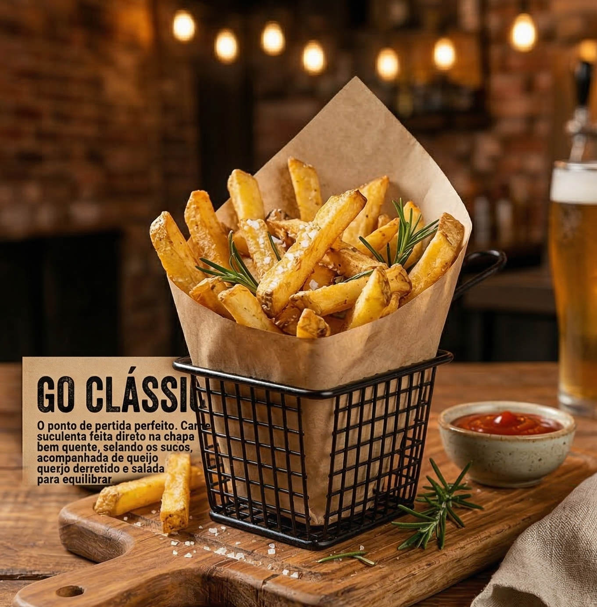
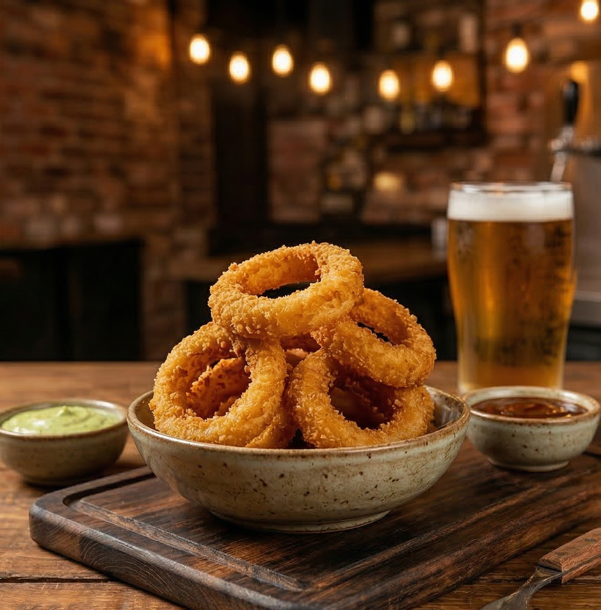
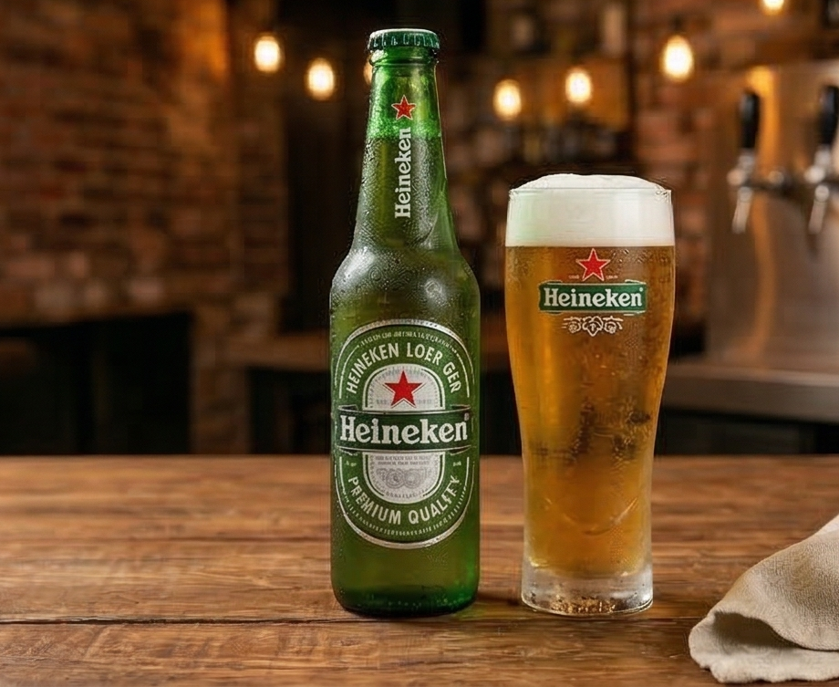
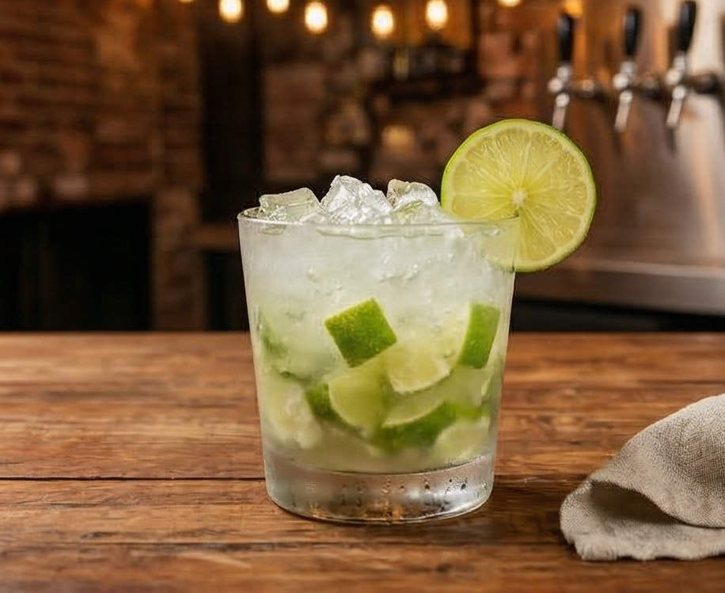

GO Burguer Cardápio
Bem-vindo à GO Burguer! Esqueça o básico: nossa chapa ferve para entregar hambúrgueres artesanais de verdade. Ingredientes frescos, carne suculenta e um sabor intenso que fala por si só.

Conheça nossos Hambúrgueres ↓
GO Clássico - R$ 30,00
O ponto de partida perfeito. Carne suculenta feita direto na chapa bem quente, selando os sucos, acompanhada de queijo derretido e salada fresca para equilibrar.

Pão brioche selado na manteiga
Hambúrguer bovino (150g)
Queijo prato derretido
Alface americana
Tomate
Maionese verde artesanal
GO Rush - R$ 34,00
Para quem tem pressa de matar a fome e precisa de um sabor explosivo para voltar logo para a partida. Um smash duplo rápido, crocante e com um leve toque picante.

Pão australiano
2x Smash burgers bovinos (90g cada)
Cheddar cremoso
Farofa de bacon defumado
Molho de pimenta da casa
GO DEV - R$ 35,00
O lanche oficial das madrugadas. Tamanho gigante para dar aquela energia extra quando você precisa focar, codar ou resolver qualquer problema na frente do computador.

Pão de gergelim
2x Hambúrgueres bovinos (150g cada)
Dobro de queijo prato
Ovo frito na chapa
Cebola caramelizada
GO da Casa - R$ 38,00
A nossa obra-prima, o sabor que define a GO Burguer. Nosso blend especial de 160g grelhado na chapa, coberto com um queijo derretido Monterrey Jack e finalizado com o exclusivo Molho GO. É o sabor que você não encontra em nenhum outro lugar.

Pão brioche artesanal
Hambúrguer artesanal GO (160g)
Queijo Monterrey Jack
Picles de cebola roxa
Molho GO
GO Duplo Bacon - R$ 40,00
O power-up definitivo para os amantes de bacon. Sem frescura, só carne e bacon. Duas carnes suculentas grelhadas na chapa, camadas duplas de queijo derretido e muito, muito bacon crocante.

Pão brioche
2x Hambúrgueres bovinos (150g cada)
Dobro de queijo cheddar
Muitas fatias de bacon artesanal crocante
Maionese de alho
Acompanhamentos ↓
Porção de Batata Frita
Batatas selecionadas, cortadas artesanalmente com casca e fritas até atingirem a crocância ideal. São finalizadas com uma combinação de sal grosso e alecrim fresco, garantindo um sabor caseiro e aromático. Acompanha maionese verde artesanal.

P - R$ 15,00
M - R$ 20,00
G - R$ 25,00
Porção de Onion Rings
Anéis de cebola selecionados e envoltos em um empanamento especial de textura leve e crocante. Fritos na temperatura exata para ficarem dourados e sequinhos, são o acompanhamento ideal para quem busca um sabor marcante. Acompanha molho barbecue.

P - R$ 15,00
M - R$ 20,00
G - R$ 25,00
Bebidas ↓
Refrigerantes Lata

Coca-Cola
Fanta laranja
Sprite
Guaraná
Refrigerantes 1L

Coca-Cola
Fanta laranja
Sprite
Guaraná
Cervejas (Long Neck)

Heineken
Budweiser
Sol
Corona
Caipirinhas

Limão
Morango
Maracujá
Abacaxi
Mais informações ↓
Faça já seu pedido: (46) 99141-9704
Horário de atendimento:
Terça a Quinta, das 18h30 às 22h30
Sexta a Domingo, das 18h30 às 23h30
Fazemos delivery! Entregamos o seu lanche quentinho em Marmeleiro e também enviamos para Francisco Beltrão. Consulte a taxa de entrega no WhatsApp.
Cansou do básico? Quer um burger de respeito para fechar a noite? Sem erro: Pede um GO!